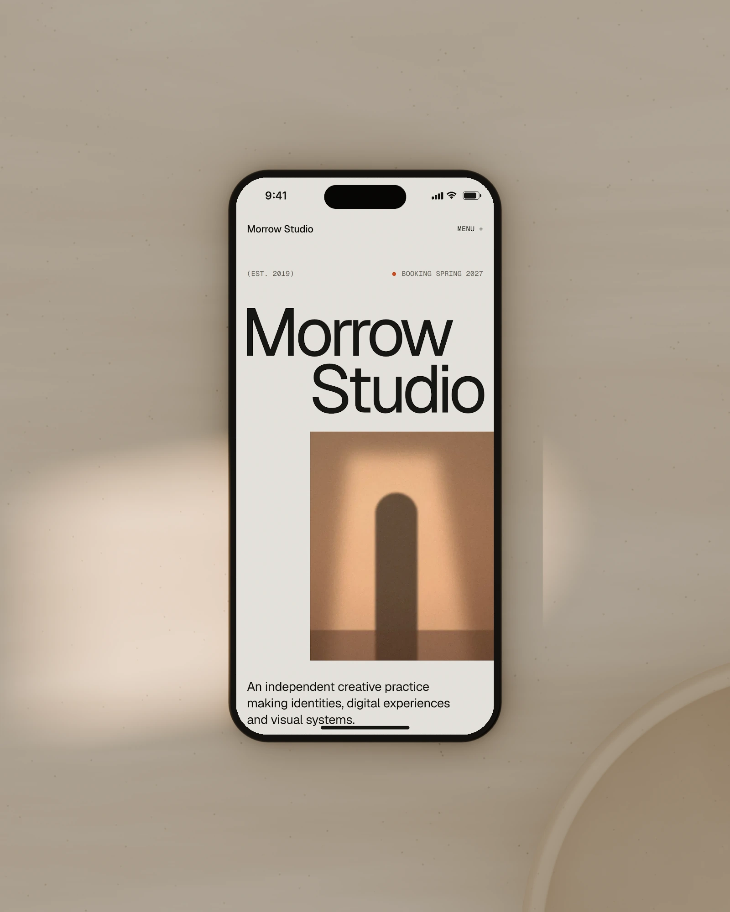
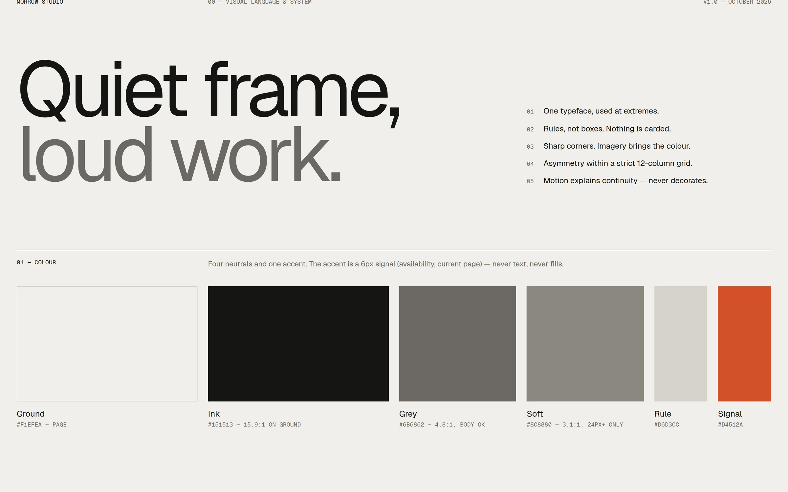
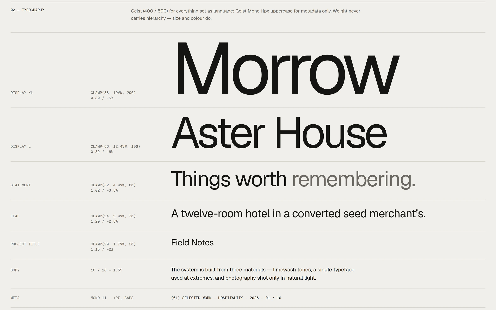
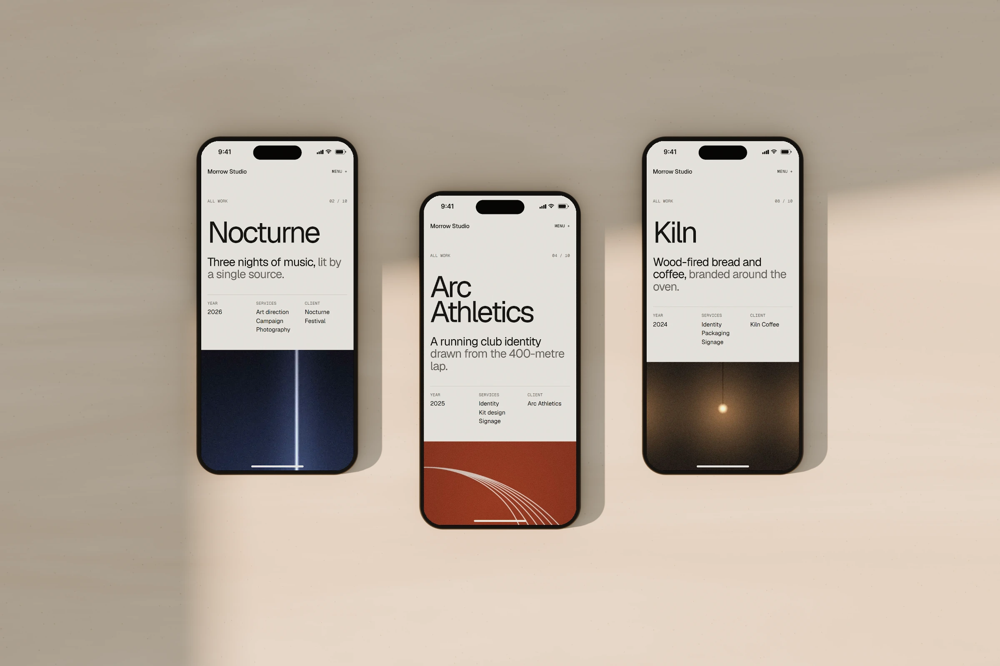
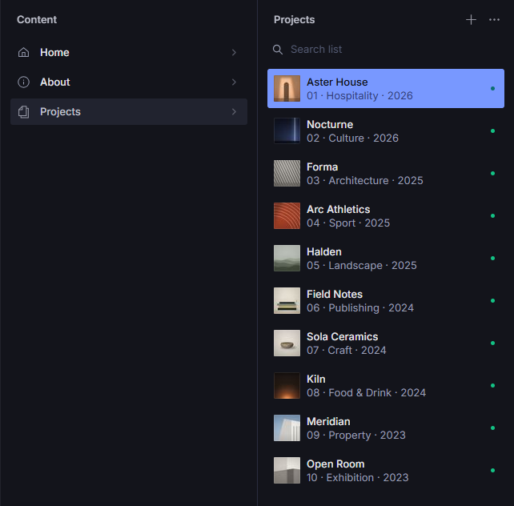
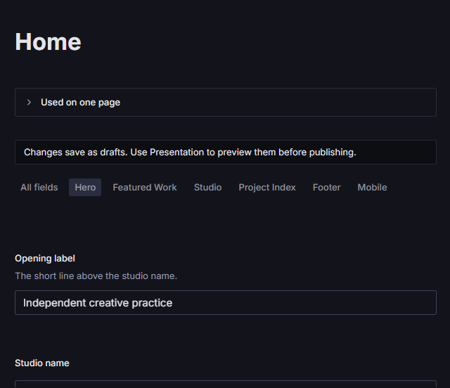
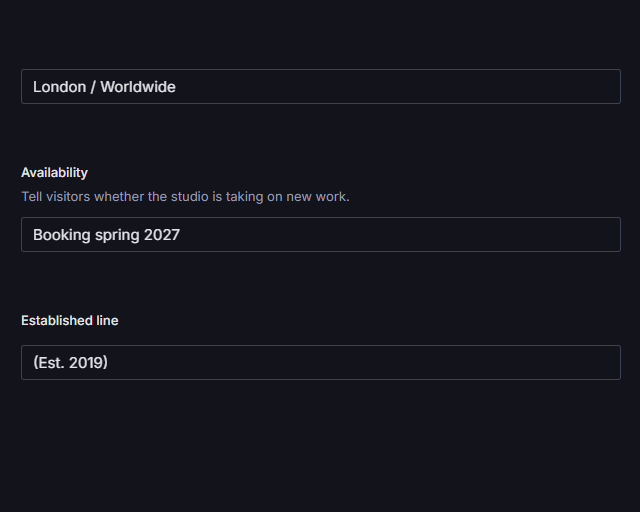
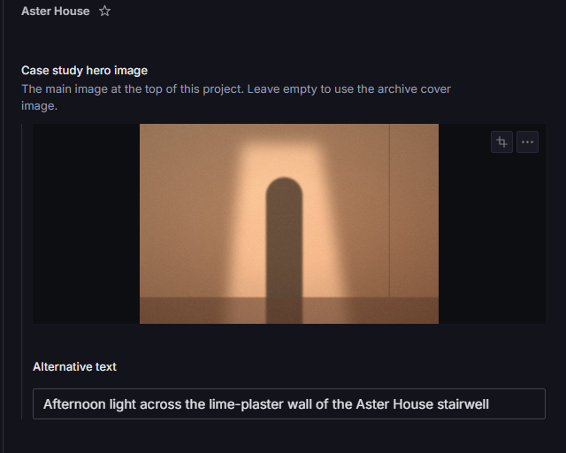
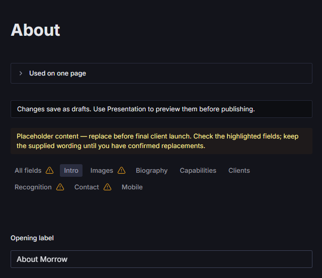
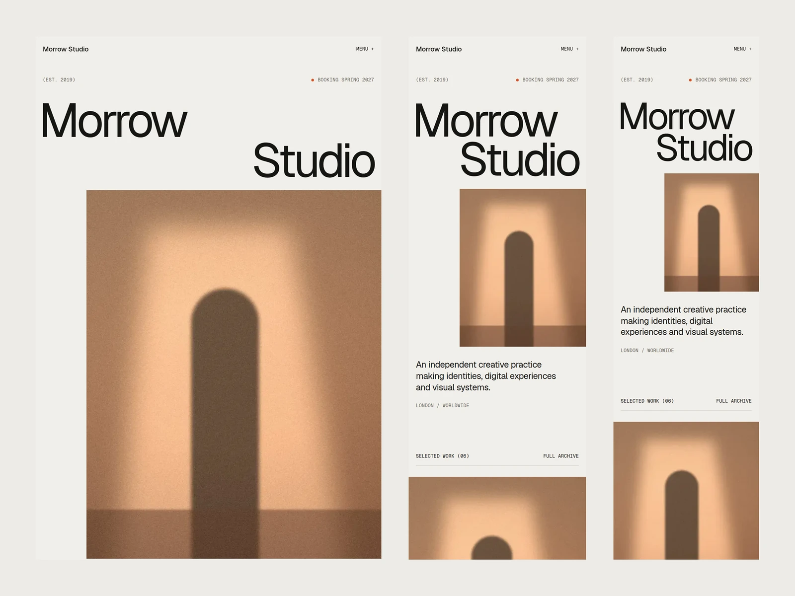

Designing both sides of a portfolio: the experience visitors see and the CMS editors use behind it.

Context
Morrow Studio is an independent creative practice that doesn’t exist. I invented it to learn Sanity properly, and to find out how far a content system could go before it started to flatten an art-directed design.
It grew into a complete studio site: an identity and an editorial design language, ten case studies with their own desktop and mobile compositions, a CMS shaped around the people who would edit it, a script that moved all the content in, and a long round of visual and interaction QA.
The home page
Design
That line opens Morrow’s design system, and the rest follows from it. The frame stays quiet: warm neutrals, an orange accent kept for small signals, one typeface used at its extremes, thin rules instead of boxes, and sharp corners. The colour comes from the photography.
Layouts are asymmetric within a strict 12-column grid. Motion explains continuity and never decorates: titles rise from a mask, images unmask as they enter, the menu staggers in, all on two shared curves. I explored the direction in Claude Design, and its exported frames became the reference the build had to match.

The principles and the palette.

The type scale, in Geist and Geist Mono.
Ten projects
Morrow has ten projects, from a twelve-room hotel in Margate to a running club in Bristol, and none of them has a page of its own. Each is a list of blocks from the same ten: text, full-width image, contained image, image pair, statement, image and text, gallery, video, quote and credits. One renderer builds every page. Each project’s composition, its column spans, offsets and image ratios, comes from layout rules generated from the design and tied to each block’s stable key.
The Work archive lists all ten in the order set in the CMS, with filters built from each project’s disciplines, a list and a grid, and a preview beside the list that changes as you move down it. On a phone, each row carries its own thumbnail instead.

Nocturne, Arc Athletics and Kiln
The Work archive at 1440 × 900: down the list, then the Identity filter and the grid.
Content model
Every project is one document: its details, a cover and a hero image, then the blocks in order. Editors decide what a page says and in what order it says it.
How it looks stays in code. Grid spans, offsets, aspect ratios, overlaps, spacing and timing belong to the design system. Editors get a few preset choices, such as where a contained image sits, but no free widths or offsets: I didn’t want the CMS to become a page builder.
In Sanity
Copy and captions
Images, crops and alt text
Section order
Service labels
Mobile replacements
Project order
In code
Grid spans and offsets
Aspect ratios
Overlaps
Spacing
Type scale
Motion and timing
Mobile
The mobile designs weren’t the desktop pages stacked up. They had their own order, sometimes other hero images, fewer gallery pictures, shorter copy, and sections that exist on one size only. Copying every project for mobile would have doubled the editing and let the two versions drift apart.
Each project lives in a single CMS document, making content easier to manage and update without duplicating work. Changes to shared content are reflected across both versions, while desktop and mobile can still have their own images, text, section order and visibility settings. For example, Forma uses a different content arrangement on mobile, replacing certain desktop sections with mobile-specific ones.
From the menu to Aster House on a phone. The overview is shorter, booking is one image-and-text block, and the gallery keeps four of its pictures.
Forma on desktop
Overview
Image pair
Structure
Drawings
Statement
Full-width image, desktop only
Gallery, desktop only
Quote
Credits
Forma on a phone
Overview
Full-width image, mobile only
Image pair
Statement
Drawings
Image pair, mobile only
Structure
Quote
Credits
The CMS
A well-structured CMS isn't necessarily easy to use. The default setup exposed technical field names, confusing options and long forms that could make managing content difficult for someone unfamiliar with the code.
I customized Sanity Studio to make content management simpler and more intuitive. Editors can log in and update the website without touching the code. The interface focuses on what they need: the Home page, About page and ten projects, organized with clear labels, thumbnails and project details. 01 · Hospitality · 2026.

The hosted Studio:
Editing
Each document is organized into clear sections that match the website, making it easier for editors to find and update content. Mobile settings are kept separate, allowing editors to customize the mobile experience only where needed. Otherwise, the main content is used automatically.
Fields are named for what they change, with a line on what they do where it helps. Placeholder copy from the design, such as [Founder name], raises a warning on its group but doesn’t stop a publish. Errors do stop it, and the custom ones say how to fix them: a project’s hero image needs alternative text, and no two projects can share a Project order.

Home opens on its Hero group, the top of the page.

Availability, with a line on what it’s for.

A project’s hero image, with the alternative text it needs before it can be published.

About, with its placeholder copy flagged on the groups that hold it.
In the schema
orderRank
disciplines
heroImage
mobileOrder
visibility: all
8a00e8e08307a2b9
sourceType: unresolved
In the Studio
Project order
Archive filters
Case study hero image
Mobile section order
Desktop + mobile
Fig. 01 The signwritten lintel…
Poster only — video source pending
Preview
Nothing an editor types goes live by accident. Changes save as drafts, and Sanity’s Presentation tool shows the draft inside the real website, beside the fields, with the page’s text and images linked back to the fields they come from.
Every document also says where it’s used: a project lists its own page and the Work archive, and Presentation opens either one beside its fields. I wrote the editors a short guide to the rest, from logging in to undoing a mistake.
Edit
In the hosted Studio, in the group that matches the part of the page.
Draft
Every change saves as a draft. The public site stays on the published version.
Preview
Presentation shows the draft in the real site, on desktop and on mobile.
Publish
When it looks right, Publish puts it live.
Migration
Typing ten projects into the Studio by hand would have been slow and easy to get wrong. A migration script read the design export, mapped it to the schema, uploaded the images and wrote everything as drafts, which were checked against the source before anything was published.
It can run again without duplicating anything. It patches documents that already exist, creates the ones that don’t, keeps their original IDs so the home page’s links to them hold, and reuses any image Sanity already has.
10
Projects published
65
Images mapped
56
Uploaded
9
Reused
From the migration report, 5 October 2026. Five projects were created and five that already existed were patched.
QA
Once everything worked, the job was matching. Playwright captured all thirteen routes at six widths, from 1440 down to 320, and the main pages were compared side by side with their reference frames, adjusted and captured again.
A separate pass checked behaviour rather than pixels: navigation, the menu, focus matching hover, the filters, list and grid, the galleries, next-project links and reduced motion. The final run passed every check.

The home page at 760, 390 and 320 pixels, three of the six widths checked.
Process
Morrow was designed first and built against that design, one layer at a time: the pages, then the content model behind them, then the content itself, then the Studio and the details.
I led the design, defined the content model, and oversaw the development, using AI coding agents to support the implementation.
Design
The system, then every page, on desktop and on mobile.
Build
Next.js pages and one renderer for the ten blocks.
Content model
Schemas for the projects, Home and About, with the mobile overrides.
Migration
The export moved in by script, checked, then published.
Refinement
The Studio for editors, then visual and interaction QA, performance and accessibility.
Stack
Front end
Next.js App Router
React
TypeScript
SCSS
CMS
Sanity Studio
GROQ
Portable Text
Preview
Presentation
Visual Editing
Draft Mode
Images
Sanity image pipeline
Hotspots and crops
Testing
Playwright
Hosting
Vercel
Sanity Studio hosting
Outcome
What began as a way to learn Sanity became a site with two audiences.
Visitors get an editorial portfolio with ten distinct case studies. Editors get a Studio that speaks their language, shows every change in the real site before it goes live, and keeps the layout out of harm’s way.
The lesson I’m keeping: the structure of a CMS is design work too. Not every visual decision belongs in it, and on a phone, a page can be an edit rather than a smaller copy.
Visual design · Interaction design · Frontend engineering · CMS architecture · Editor experience · Content migration · QA
Next project
Acetrail